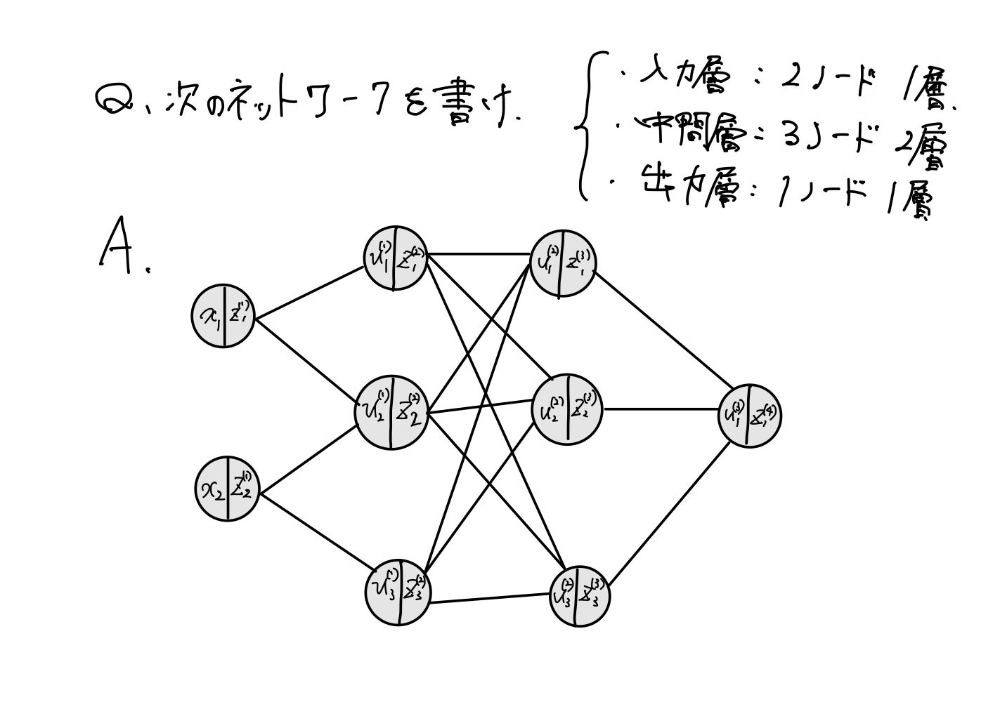
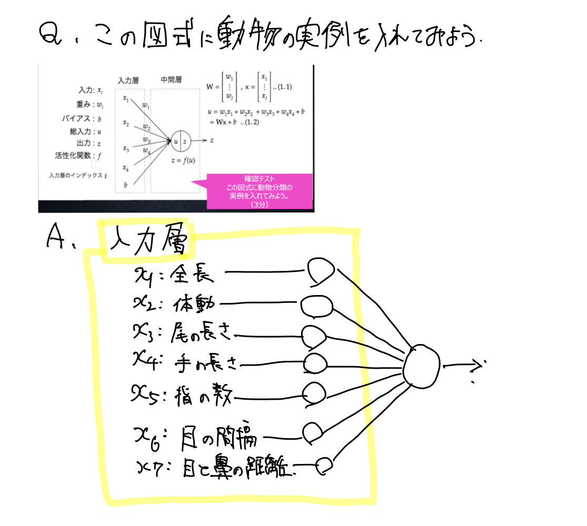
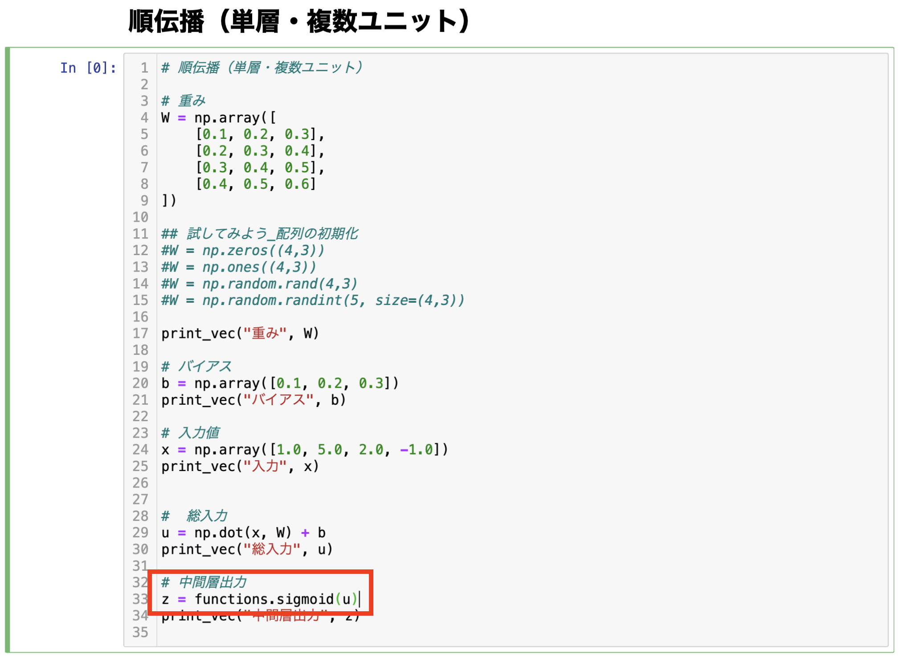
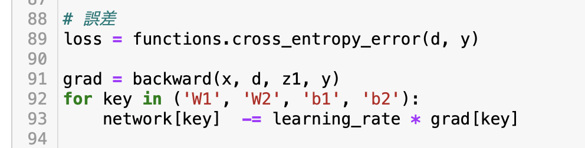
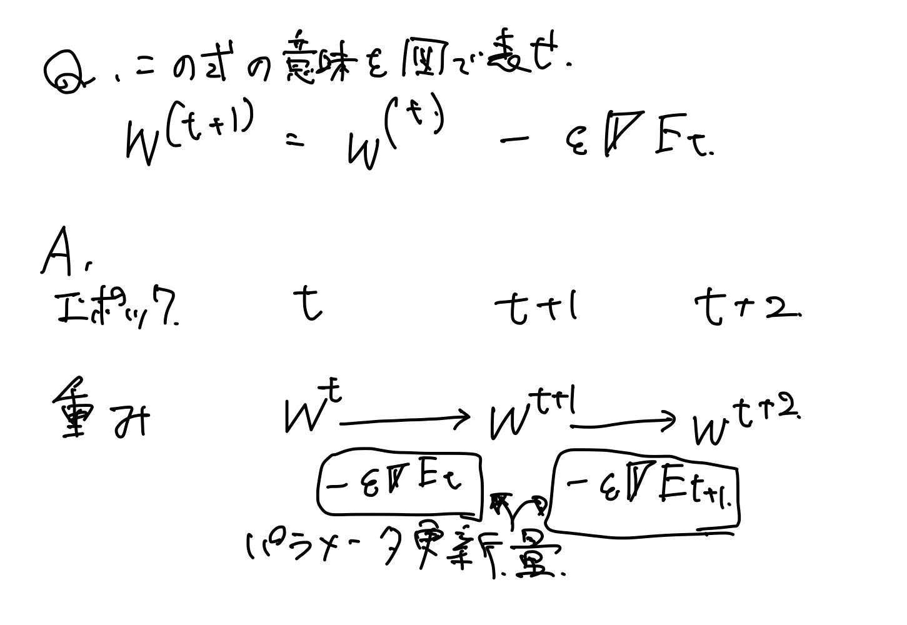
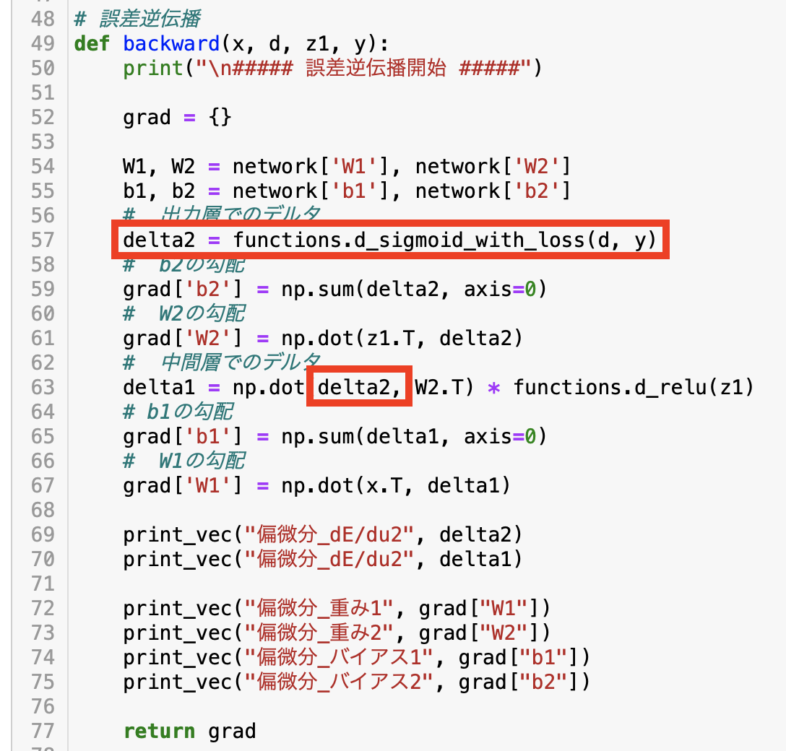
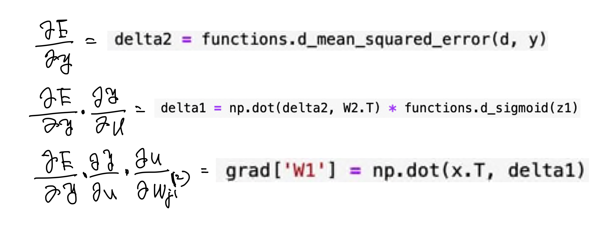
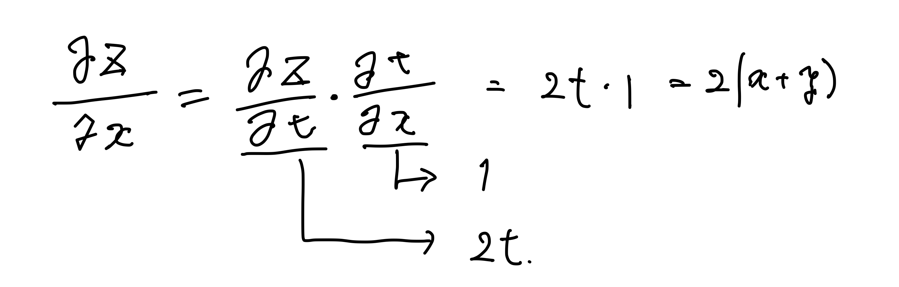

入力層の役割は、入力データに対して重みを掛け、バイアスを足し合わすことで,
中間層に結果を受け渡すこと。
重みは傾きでバイアスは切片に相当する。
中間層は入力層から得た値を活性化関数に入力することで出力を得る。
出力は次のネットワークに受け渡される。
学習とは、重みとバイアスを最適化することである。
Q1：ディープラーニングは何をやろうとしているか？何を最適化することが最終目的か？
A1：目的は重みとバイアス の最適化である。
Q2：次のネットワークを紙にかけ。
入力層：2ノード1層
中間層：3ノード2層
出力層：1ノード1層
A2：

Q3：動物分類の実例を入れてみよう
A3：

Q4：この数式をpythonで書け
A4： np.dot(x,W)+b
Q4：中間層の出力を定義している箇所を抜きだせ。
A4：

活性化関数は次の入力層への出力の大きさを決める日線型の関数。
次の層へ強弱をつけてデータを受け渡す。
活性化関数は中間層用ではReLU/シグモイド/ステップ関数、
出力層で用いられるものは、シグモイド、ソフトマックス、恒等写像が用いられている。
スタップ関数は1か0しか出力できない、シグモイドは勾配消失問題がある為、
ReLU関数が用いられている。
Q1：線型と非線形の違いについて説明せよ
A1：線型は1次関数で加法性や斉次性を満たす、非線形は加法性や斉次性を満たさない。
Q2：活性化関数を定義しているコードを抜きだせ
A2：
出力層の役割：中間層が出力したデータを活性化関数に入れて結果を出力すること。
また、回答と正解との誤差を二乗誤差などで定量化する役割も担う。
中間層と異なり、信号の大きさの比率が変わらないように、（分類問題では1-0の範囲で限定して）出力する。
出力層で用いられるものは、シグモイド、ソフトマックス、恒等写像が用いられている。
回帰では恒等写像、誤差関数は2乗誤差
2値分類；シグモイド関数、誤差関数は交差エントロピー
多クラス分類：ソフトマックス関数、誤差関数は交差エントロピーを用いる。
Q1：2乗する理由、1/2する理由は？
A1：2乗する理由は、誤差の総和を出したいので正負が混ざると打ち消されてしまう為。
1/2する理由は、後の誤差逆伝搬で計算が簡単になる為。
Q2：ソフトマックス関数の①〜③の該当の数式に該当するソースコードを示し説明せよ。
A2：①クラス数と各クラスの出力
②クラスの確率 np.exp(x)
③各クラスの確率の総和 np.sum(np.exp(x))
Q3：①、②に該当するソースコードを示し、一行ずつ処置の説明をせよ。
A3：yは0と1の出力値、dは出力値。dが最大となる位置で各出力が計算したクラスを計算(np.argmiax()で最大の場所）。
以下の式で交差エントロピーの本計算
-np.sum(np.log(y[np.arange(batch_size),d)] +1e-7))/batch_size
勾配降下法は、以下の3つの方法が用いられる。
勾配降下法、確率的勾配降下法、ミニバッチ勾配降下法
●勾配降下法とは
勾配降下法は学習率がハイパーパラメータ。
学習率が大きいと収束しない。
学習率が小さいと時間がかかる、極小解につかまって脱出できずに学習が進まなくなる。
勾配降下法の計算方法はAdamなど多数存在する（後で詳細を説明。）
学習率に従って重み、バイアスを更新する回数の単位をエポックという。
●確率的勾配降下法とは
ランダムに抽出したサンプルで学習することで、極小解の回避とオンライン学習をできる事
データのメモリの節約が可能。
●ミニバッチ勾配降下法
バッチを分割してメモリに乗り切らないデータを分割する。
メモリの効率的な利用、スレッド並列化、GPUを用いたSIMD並列化が可能。
SIMD(Single Instruction Muiti Data)
Q1：勾配降下法に該当するソースコードを抜き出してみましょう
A1：

Q2：オンライン学習とは何か
A2：データを追加してパラメータ（重みとバイアス）を学習できる。
バッチ学習は一度にデータをすべて投入する
Q3：パラメータ更新の式の意味を図で説明せよ。
A3：

勾配計算には微分を用いる。
数値微分(微小な差分加えて足し引きすることで傾きを求める)では計算量が大きい為使用が現実的ではない。
→誤差逆伝播を用いる
●誤差逆伝播とは
逆に微分していくことで微分の連鎖律により計算を簡略化できる。
一度計算した結果を再利用できるため計算が効率化される。
自分最適化したい重み、バイアスまで微分して辿っていくことで計算できる。
Q1：誤差逆伝播法では不要な再起的処理を避けることができる。
すでに行なった計算結果を保持しているソースコードを抽出せよ。
A1：

Q2：空欄に該当するソースコードを探せ。
A2：

Q3：連鎖率をの原理を使いdz/dxを求めよ。
z=t^2,t=x+y
A4：

勾配消失とは、多層のネットワークを形成することで微分ちが0-1の範囲の値のため、
逆伝搬で値が0に近づいていってしまう現象。
特に、シグモイド関数では数値が大きくなるほど、傾きが0に近づくために勾配消失を引き起こしやすい。
解決方法
1)活性化関数の選択
ReLU関数を使用する。勾配消失の回避とスパース化に貢献することで勾配消失を抑制。
現在の主流の活性化関数
2)重みの初期設定
一般的に正規分布に従う乱数を使って重みを与える。
Xavier初期化：正規分布を前のレイヤーのノード数のルートで割ることで、偏りのない出力が得られる。
主にs字カーブの曲線に対して適用可能。
ReLU関数などのs字カーブでない活性化関数に対しては、Heの初期値を用いる。
He初期値＝標準偏差/(2/前のノードのレイヤー数）のルート
3)バッチ正規化
ミニバッチ学習でバッチごとのデータの入力の偏りを抑制する手法。
バッチ正規化を活性化関数の前に入れて入力の偏りをなくす。
Q1：シグモイド関数を微分したとき、入力が0の時に最大値を取る。その値はいくつか
A1：0.25
Q2：重みの初期値が0設定するとどのような問題が発生するか
A2：正しく学習できない均一に更新されるために複雑な学習ができなくなる
Q3：一般的に考えられるバッチ正規化の効果を２点挙げよ。
A3：バッチ間のデータの偏りをなくす。補正をするため、勾配消失が起きにくくなる。
学習率のを最初は大きく、後半小さくしていくことが望ましい。
1）モメンタム
前回の学習の重みを足し合わせることで、①局所最適解の回避（大域的最適解への到達）②谷間にいても早く最適化できる
勾配降下法：ジグザグ運転に対して、モメンタムは移動平均のような移動
2）AdaGrad
学習率を前の誤差を加味して再設定する方法。誤差が小さい領域で最適解に近づきやすい。
緩やかな斜面になったら学習率が小さくなるため、鞍点問題を引き起こしやすい
3）RMSProp
AdaGradの発展系、前回の誤差を反映する度合いをαで表現することで、
鞍点問題を解決し、大域的最適解を設定できる。
4）Adam
モメンタム、RMPPropのメリットを取り込んだアルゴリズム。
最もよく用いられている。
過学習とは、トレーニングデータに適合しすぎてテストデータに対して正答率が上がらなくなる現象。
過学習の原因は重みが極端に大きくなることで情報を課題評価することで発生する。
そのため、極端な重みの増加を防ぐことが基本の対策となる。
自由度が高すぎることで発生するため、自由度を下げることが手段として用いられる。
主に以下の正則化を手法として用いられる
1）L1/L2正則化
誤差関数にpノルムを加える。p=1でＬ１正則化（Lasso）、p=2でL2正則化(Rigge)という。
・p1ノルムは、距離成分の積算、道のり距離ーマンハッタン距離
・p2ノルムは、距離の絶対値（x^2+y^2）^0.5ーユーグリッド距離
P1ノルムでのスパース化により無駄な情報がなくなり、勾配降下がスムーズになる。
2）ドロップアウト
ランダムにノードを削除して学習される。データ量を変化させずに学習を進めさせる。
Q1：L1正則化について表しているグラフはどちらか。
A1：右図（Lasso）。理由はマンハッタン距離を用いることで、
軸上以外の自由度をなくす性質を持つため、
等高線が菱形になる性質を持つためである。
CNNでは次元間でつながりのあるデータを扱う。（画像やスペクトルなど）
1）畳み込み、2）プーリングを行い、出力を行う。
1）畳み込み：特徴量を抽出するため、フィルター画像を端から順に掛け合わせた結果を出力し、畳み込み画像を得ること。
畳み込み演算のためには、①バイアス、②パディング 、③ストライドの3つの概念が用いられている。
①バイアス：畳み込み後のデータに足す数字。
②パディング：畳み込みで出力画像が小さくなるのを防ぐために画像の外側を補間すること。0や最近傍値で埋める方法が一般的。
③ストライド：フィルターの移動幅。
2）プーリングは重みを使わずにフィルタ内の最大値、平均値などの特性値を出力する。
Q1：サイズ6ｘ6の入力画像をサイズ2x2のフィルタで畳み込んだ時の出力画像のサイズを答えよ。
ストライドとパディングは１とする。
A1：7x7
Q2：サイズ5ｘ5の入力画像をサイズ2x2のフィルタで畳み込んだ時の出力画像のサイズを答えよ。
ストライドは2、パディングは１とする。
A2：3x3
AlexNetのモデルの説明
224x224の画像を使用。
Flatten処理で画像を数字の配列に変換する処理を用いている。
GlobalMaxPoolingやGlobalAveragePoolingで効率的にデータの特徴量を抽出できる。
全結合層にドロップアウトを適用。一般的にドロップアウトは全結合層に適用される。
●追加レポート
最新のCNNモデルであるSEnet(Squeeze-and-Excitation Networks)を学習。
SEBlockと呼ばれる以下の工程を経ることが特徴である。
①inputデータに対してGlobalAveragePoolingを適用することで計算を簡略化
②Encode/Decode（ReLu関数によるデータ範囲の値の簡素化とシグモイド関数によるデータ範囲の狭小化）
①/②で得た値をInputデータに掛け合わせることで重み付をする。
これにより、計算負荷をほぼ上げることなく、性能向上を実現できる